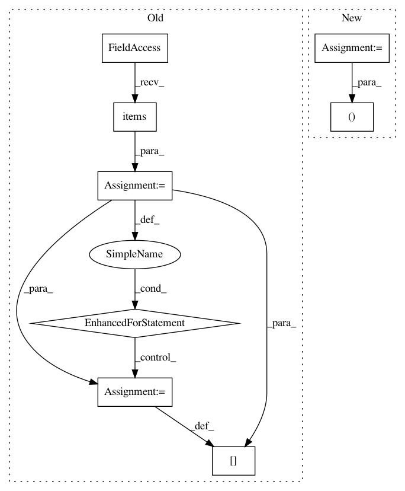

f7a56772232dcf8328261f69538e0fee9bb88d3c,pyro/contrib/epidemiology/compartmental.py,CompartmentalModel,_quantized_model,#CompartmentalModel#,680
Before Change
// Sample any non-compartmental time series in batch.
// TODO Consider using pyro.contrib.forecast.util.reshape_batch to
// support DiscreteCosineReparam and HaarReparam along the time dim.
for name, (fn, is_regional) in self._non_compartmental.items():
fn = dist.ImproperUniform(fn.support, fn.batch_shape, fn.event_shape)
with self.time_plate, optional(self.region_plate, is_regional):
curr[name] = pyro.sample(name, fn)
// Truncate final value from the right then pad initial value onto the left.
init = self.initialize(params)
prev = {}
for name, value in init.items():
if name in self.compartments:
After Change
// Sample global parameters and auxiliary variables.
params = self.global_model()
auxiliary, non_compartmental = self._sample_auxiliary()
// Manually enumerate.
curr, logp = quantize_enumerate(auxiliary, min=0, max=self.population,
In pattern: SUPERPATTERN
Frequency: 3
Non-data size: 8
Instances
Project Name: uber/pyro
Commit Name: f7a56772232dcf8328261f69538e0fee9bb88d3c
Time: 2020-06-13
Author: fritzo@uber.com
File Name: pyro/contrib/epidemiology/compartmental.py
Class Name: CompartmentalModel
Method Name: _quantized_model
Project Name: reinforceio/tensorforce
Commit Name: 89ef2b21c7ea77929819dec7ba589c13c49bd702
Time: 2019-01-26
Author: alexkuhnle@t-online.de
File Name: tensorforce/core/models/distribution_model.py
Class Name: DistributionModel
Method Name: __init__
Project Name: JasonKessler/scattertext
Commit Name: 92c50bc4c19d457eada61f64797edc611d487c01
Time: 2016-12-02
Author: jason.kessler@gmail.com
File Name: scattertext/TermDocMatrix.py
Class Name: TermDocMatrix
Method Name: get_term_freq_df